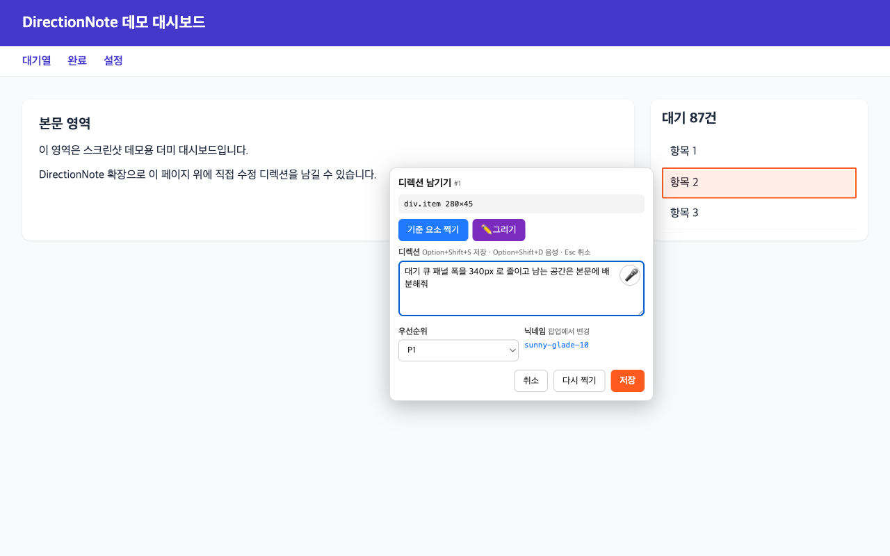
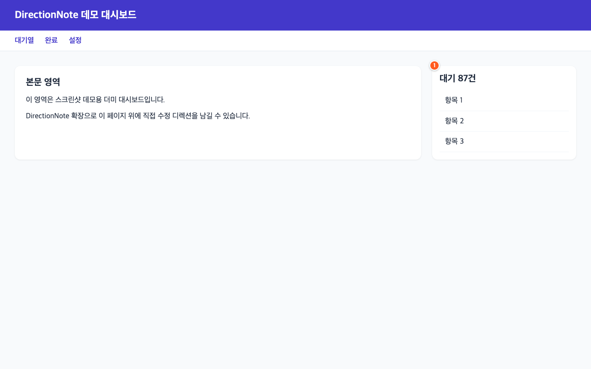

화면에서 시작하는 수정 요청
“여기를 고쳐줘.”
설명은 화면 위에.
수정할 요소를 찍고, 원하는 변화를 적으세요.
위치와 화면이 담긴 노트를 코딩 에이전트가 읽고
작업을 이어갑니다.
어떻게 쓰나요 ↓Chrome 웹 스토어 등록 준비 중
01디렉션 노트예시
선택한 요소 → 대기 큐 패널
“이 패널을 조금 줄이고,
남은 공간은 본문에 주세요.”
요소 위치화면 캡처수정 요청
백 마디 설명 대신, 한 번의 선택.
실제 확장 화면 · 데모 데이터
사용 방법
화면의 맥락을
그대로 전달하세요.
확장은 디렉션을 기록합니다.
실제 코드 수정은 연결한 코딩 에이전트가 수행합니다.
- 01
수정할 곳을 선택
요소를 클릭하거나 영역을 드래그하세요. 펜과 형광펜으로 원하는 부분을 더 구체적으로 표시할 수 있습니다.
- 02
원하는 변화를 기록
텍스트 또는 음성으로 요청을 남기세요. 요소 위치 정보, 페이지 맥락, 화면 캡처가 노트와 함께 저장됩니다.
- 03
에이전트가 읽고 작업
코딩 에이전트는 명령줄 도구나 MCP로 노트를 읽습니다. 같은 페이지를 다시 열어 남은 노트를 확인하고 완료 처리하세요.
작업은 이어지고, 맥락은 남습니다
다시 열어도
어디였는지 알 수 있게.
남긴 노트가 페이지 위의 배지로 표시됩니다. 여러 위치 정보와 페이지 맥락을 함께 기록해, 에이전트가 대상을 찾는 데 활용합니다.
배지 화면 크게 보기 ↗

내 작업에 맞는 저장 방식
노트가 머무를 곳도
직접 선택하세요.
개인 컴퓨터의 수집 서버, 팀이 운영하는 서버, 또는 직접 연결한 Google Drive·Dropbox·WebDAV 폴더에 노트를 저장합니다.
확장 사용에는 수집 서버 또는 클라우드 연결 설정이 필요합니다. 코딩 에이전트는 별도로 연결해야 합니다.
수집 정보와 저장 방식을 자세히 보기 ↗지원 및 사용 문의
DirectionNote가 궁금하신가요?
설치·연결 방법, 버그 제보, 개인정보 관련 문의를 보내 주세요.